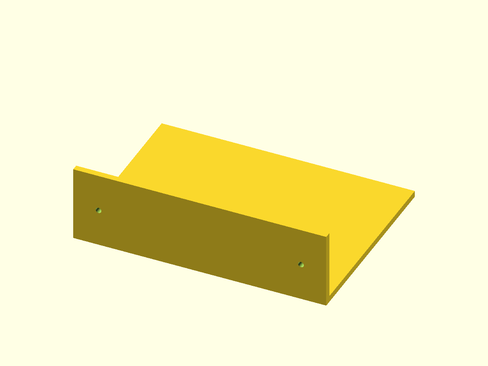

rx290/PolyForge 上游派生 · 本地 CAD 集成
真实模型，直接旋转查看
这件壁架由本轮实际 PolyForge CLI → OpenSCAD 导出。拖动模型查看结构；网页只渲染已生成 STL，不运行 Python/CAD 内核或云端模型。
正在载入实际导出模型…
下载示例 STL本轮真实 CLI 结果

200 × 150 × 60 mm；796 三角面；0 退化面；按边计数水密。检查不等于打印机实物尺寸、材料强度或装配安全验收。
如何生成自己的模型
准备 Python 与对应 CAD 程序，安装仓库后使用 polyforge design 与 polyforge export。默认模板引擎离线；本地大模型、摄影测量与 GUI 有额外条件。